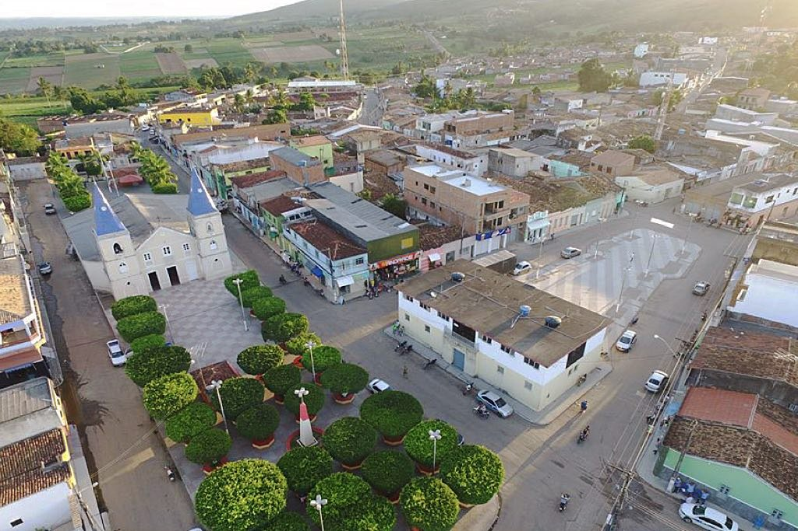

Malhador
História
Bem no centro do Estado de Sergipe, num planalto, está edificada a sede do município de Malhador, a 49 quilômetros de Aracaju. Com terras, excelentes para a agricultura o local onde se encontra Malhador é alto e seguro. Tornou-se um ponto certo para os criadores levarem seus rebanhos. Daí a explicação do seu nome: “lugar alto e plano onde o gado se deita para ruminar e descansar”. Curiosamente, o município não nasceu a partir da construção de uma capela, mas as primeiras casas surgiram para que os vaqueiros da cidade de Itabaiana (Sergipe) pudessem descansar.
A igreja de Malhador custou muito suor e trabalho. Anos e anos de coletas, leilões, ajudas para construí-la. Foi construída aos poucos, aos pedaços. A ideia, estimulada pelo padre de Riachuelo (Sergipe), Manoel José de Oliveira, português de quatro costados, conservador, mas dinâmico, preocupado com o seu rebanho. Mas foi padre João Marinho de Souza, também português, que iniciou, em 1933, a construção. Construídas as bases, só em 1936 é feito o altar. É de se destacar o trabalho de Lúcio Pedreiro, e de Zé de Beata, os dois grandes mestres da obra.
A base da sua economia era, e continua até hoje sendo a agricultura. Um dos principais produtos agrícolas é o inhame, da família dos tubérculos, que se desenvolve de acordo com a quantidade de água que lhe é fornecida. O forte poder econômico gerado a partir dessa produção pode ser comprovado pelos resultados alcançados pelas famílias envolvidas no plantio. Atualmente Malhador é conhecida como a terra do Inhame. A cidade de Malhador é detentora de um grande manancial de água, represada através da barragem do rio Jacarecica II, na divisa com o município de Areia Branca.
Os primeiros registros da existência de Malhador são do final de 1660. Mas apesar da influência e da proximidade com a cidade de Itabaiana, quando Riachuelo se tornou vila, em 1874, Malhador passou a ser dependente dela. Essa dependência trouxe alguns frutos, como por exemplo a cana-de-açúcar, que tinha em Riachuelo uma gigantesca produção.
fonte: https://malhador.se.gov.br/texto/1/historia-do-municipioDados Gerais de acordo com o IBGE
| Prefeito (a) | Francisco de Assis Araújo Júnior |
| Vice-Prefeito (a) | Everaldo Faro |
| Site do município | https://malhador.se.gov.br/ |
| Área territorial | 101.888 km² |
| População estimada | 12.689 pessoas |
| Densidade demográfica | 119,30 hab/km² |
| IDHM | 0,587 |
| PIB per capita | R$ 13.133,49 |